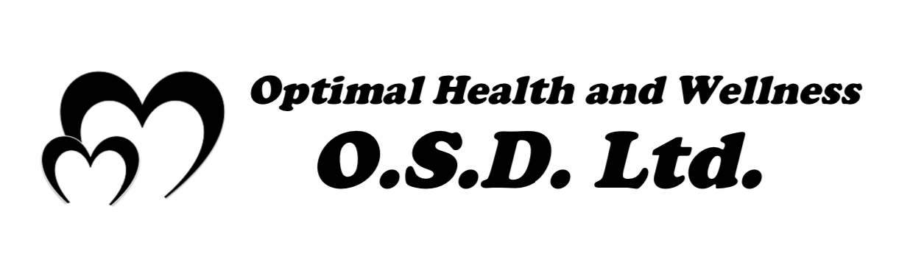
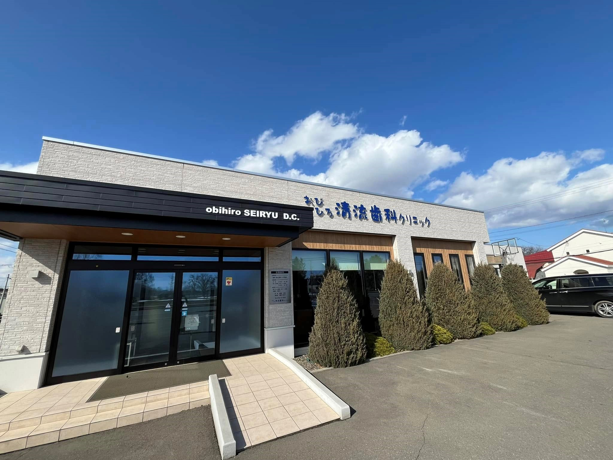

O.S.D.株式会社は、本当の意味での医療、そして予防医学の考えをベースとし、 あなたにとって最適な健康を考え、充実した人生をサポートいたします。
ご注文は11000円から、22000円以上送料無料
セカンドオピニオン／歯科治療相談／食事相談／その他相談

おびひろ清流歯科クリニック
〒080-0020 北海道帯広市西十条南41-3-8
完全予約制 0155-47-2525
自然派根本療法歯科医院として、自己治癒力を重視した最小限の医療介入による歯科医療を実践している歯科医院です。全身からのアプローチを大切にし、食事指導をはじめとする生活習慣指導、各種全身測定装置を用いた指導、内海式精神構造分析法を用いた精神療法から、根本的な視点での予防医学を提供しています。
| 診療時間 | 月 | 火 | 水 | 木 | 金 | 土 |
| 9:00-12:30 | ● | ● | － | ● | ● | － |
| 13:30-18:00 | ● | ● | － | ● | ● | － |
| 9:00-16:30 | － | － | 第1 第3 |
－ | － | 第2 第4 |
必須お名前
必須メールアドレス
必須お問い合わせ先
必須お問い合わせ内容